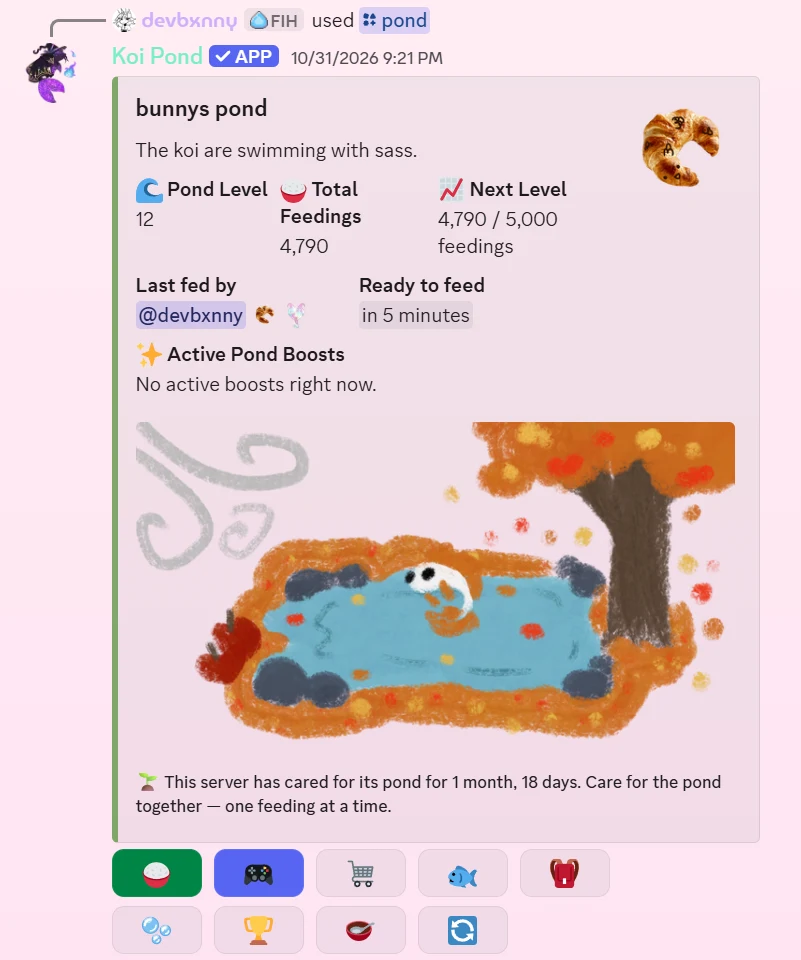
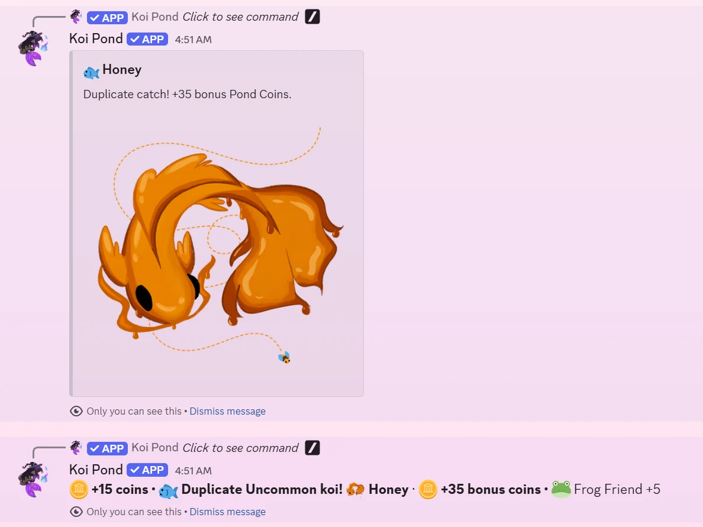
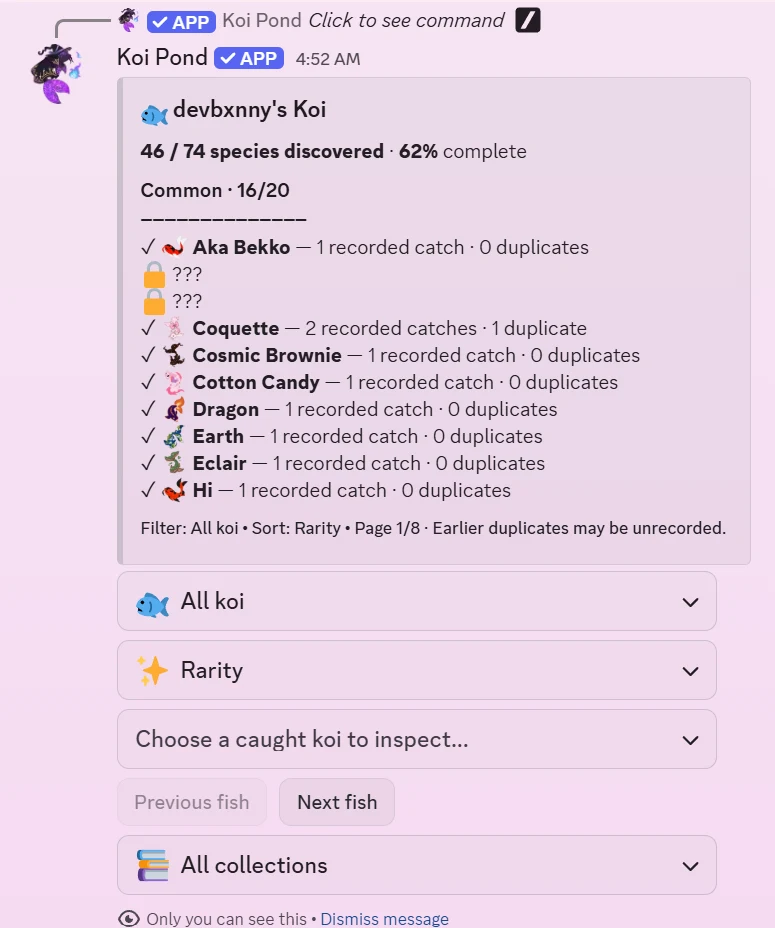
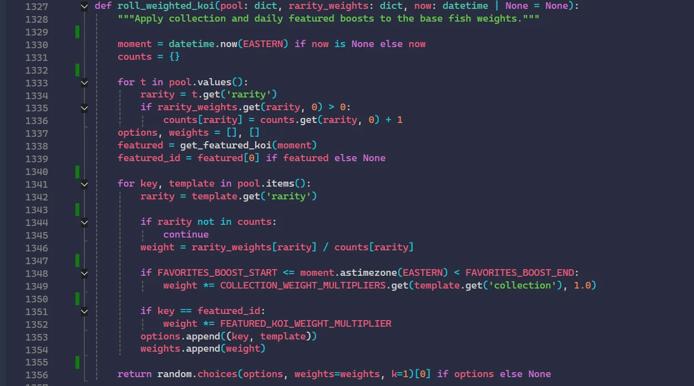
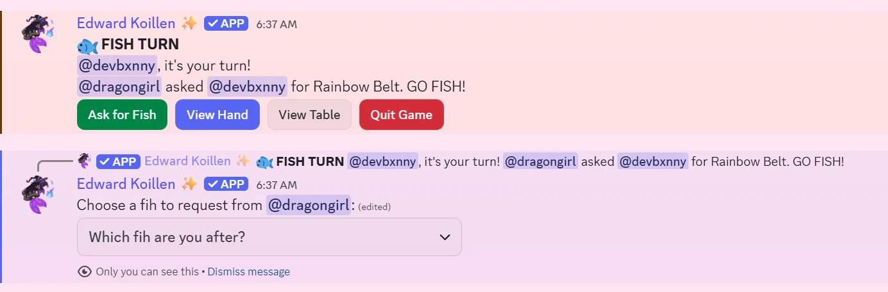
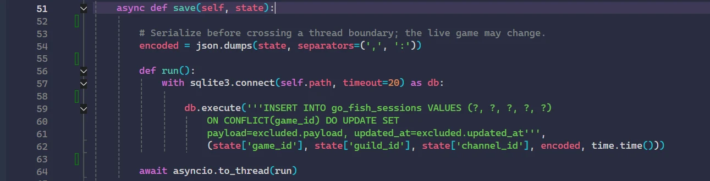
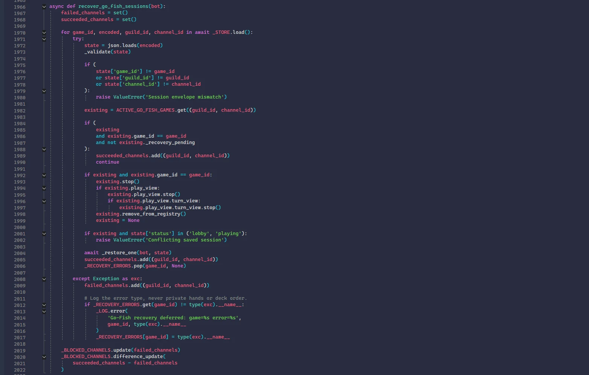
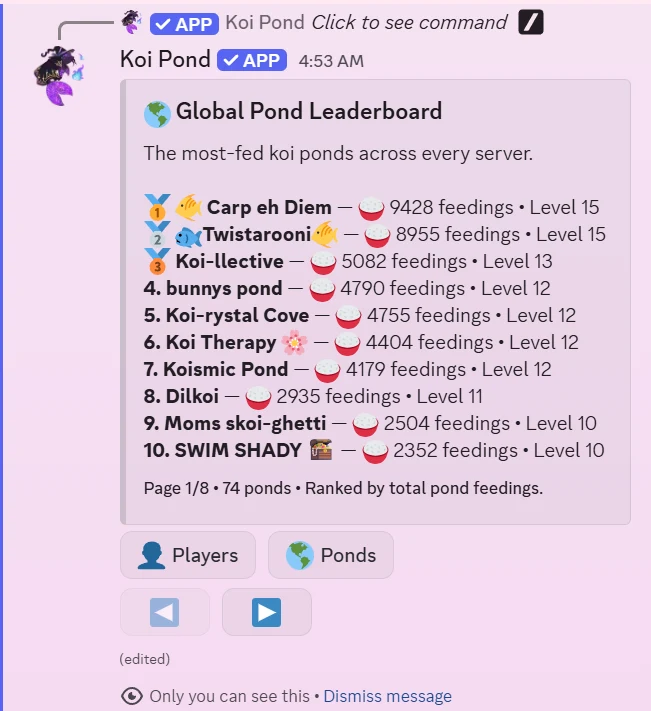
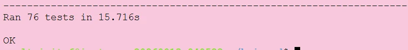

The project
Koi Pond transforms a Discord server into a shared, ongoing game. Players feed their community pond, discover collectible koi, earn coins, and participate in minigames. I developed and maintain its gameplay systems, persistence, testing and deployment.
The central design challenge: Discord interactions are transient, but the game world must persist across players, sessions and bot restarts.
01 / Collection and economy
The collection system tracks discovered species, individual catches and duplicates. A weighted selection algorithm distributes rarity probabilities across eligible koi and applies time-bound collection and featured-fish modifiers.


Under the hood: weighted selection
The code normalizes each rarity’s weight by its number of eligible species, then applies active multipliers before making a weighted random choice. This keeps the rarity distribution intentional while supporting rotating content.

02 / Multiplayer interaction design
Go-Fish uses turn-based public game updates alongside private, player-specific controls. Players can request fish, inspect their hands and view the table without exposing private information to other participants.

03 / Persistence and recovery
Live multiplayer games need to survive interruptions. Go-Fish stores serialized session snapshots in SQLite, then validates and restores them when the bot resumes. Recovery checks session identifiers and existing in-memory games before rebuilding active sessions.
Commands & buttons
Game state & rules
Persistent snapshots
Simplified logical architecture; not a complete infrastructure or data-flow diagram.
Asynchronous snapshot writes
The session is serialized before crossing the thread boundary. A SQLite upsert writes the snapshot, while asyncio.to_thread() keeps the blocking database call off the event loop.

Defensive recovery
Recovery validates saved data, detects conflicting sessions, cleans up superseded views and records error types without logging private hands or deck order.

04 / Live operations and community scale
The game runs as a hosted Linux service and includes global cross-server rankings. The leaderboard below shows 74 ponds at the time of capture, illustrating real adoption rather than a single-server prototype.

05 / Testing and reliability
Feature changes are supported by automated tests and controlled deployment practices. In the captured test run, all 76 discovered tests passed in 15.716 seconds. This is evidence of a successful run, not a claim of exhaustive coverage.

What I learned
As Koi Pond grew, the work evolved from building features to maintaining a live service: designing recoverable state, keeping player interactions responsive, handling ongoing content updates and validating changes before deployment. The most important lesson was to treat persistence and operational reliability as part of gameplay design, not as afterthoughts.